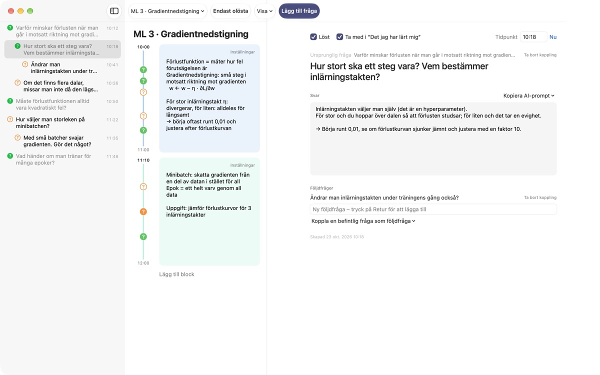
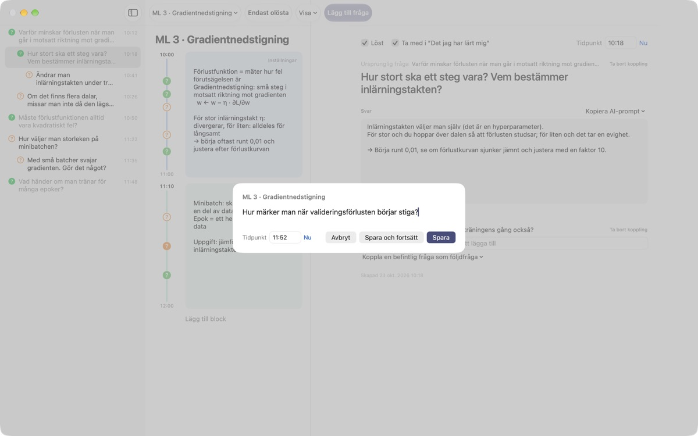
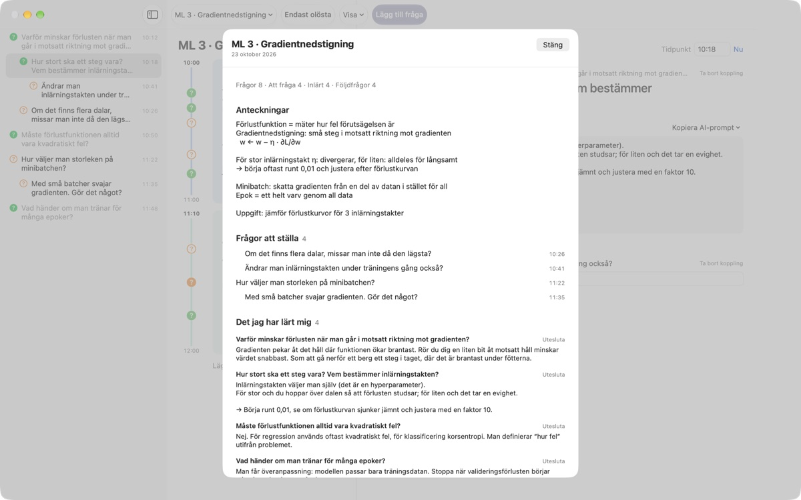
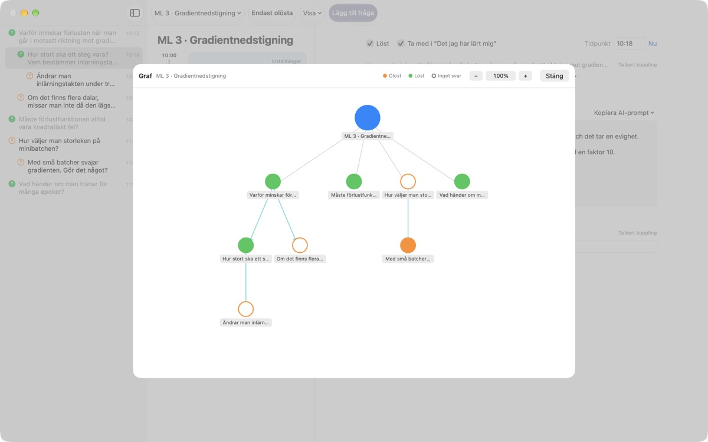

Låt ingen fråga från
föreläsningen glida förbi
Tryck ⌘⇧N, skriv en rad, så hamnar frågan bredvid dina anteckningar från just den minuten. Du lyssnar vidare och letar svar senare.
För macOS 14 eller senare. Inget konto, allt stannar på den här Macen.

Prova här
Du sitter mitt i en föreläsning om maskininlärning. Skriv en fråga och spara den, så dyker ett ? upp bredvid blocket för den tiden. Välj en tid utanför blocken så skapas ett nytt block åt den.
Minns du frågan när föreläsningen är slut?
Så fort du tänker ”vänta, varför då?” har föreläsaren redan gått vidare. Frågetecknet i marginalen minns inte vilken förklaring det hörde till, och frågan blir aldrig besvarad. LectureQ fäster varje fråga vid dina anteckningar från just det ögonblicket och håller den framme tills du har listat ut svaret.
Fråga utan att missa nästa mening
Öppna inmatningsfönstret med Lägg till fråga i verktygsfältet eller ⌘⇧N. Tiden fylls i av sig själv. Retur sparar, ⌘Retur sparar och gör dig redo för nästa.
Varje fråga visas som ett ? bredvid sitt tidsblock, så senare ser du direkt vilken del av föreläsningen den kom ifrån.

Besvarade frågor blir det du har lärt dig
Skriv svaret med egna ord, markera frågan som löst så hamnar den under Det jag har lärt mig i sammanfattningen. Det som fortfarande är öppet ligger kvar under Frågor att ställa, och listan till nästa tillfälle bygger sig själv.Kopiera AI-prompt i frågedetaljerna lägger en färdig prompt i urklippet, med föreläsningens namn och dina anteckningar från just då. Klistra in den i den AI-tjänst du redan använder.

Se vart tankarna tog vägen
Följdfrågor läggs indragna under frågan de kom ifrån, och grafen binder ihop dem med pilar. Klicka på en nod för att hoppa direkt till frågan.
Under Inlärningsstatus skriver du var du står nu, var du vill vara när kursen är slut och vad du vill lära dig, och jämför.

Tre steg för att komma igång
- 1
Skapa en föreläsning
Från föreläsningsmenyn till vänster i verktygsfältet, eller importera ett samtal sparat som Markdown.
- 2
Skriv ner den direkt
Tryck
⌘⇧N. En rad räcker, tiden är redan ifylld. - 3
Svara senare
Skriv svaret och klicka på ? för att markera den som löst. Den flyttar till Det jag har lärt mig.
Kortkommandon
- ⌘⇧N
- Lägg till fråga
- Return
- Spara
- ⌘Return
- Spara och skriv nästa
- Esc
- Avbryt
- ⌘1
- Sammanfattning: frågor att ställa, det du lärt dig, anteckningar
- ⌘2
- Graf: ursprungliga frågor och följdfrågor
- ⌘3
- Tidsblock: alla föreläsningars block i tidsordning
- ⌘4
- Inlärningsstatus
- ⌘+ · ⌘- · ⌘0
- Större text, mindre text, standardstorlek
Alla finns också i menyn Visa.
Alla funktioner är gratis
Gratis
- Snabba frågor och anteckningar per tidsblock
- Följdfrågor och graf
- Sammanfattning, tidsblocksöversikt och Inlärningsstatus
- AI-promptar i fem steg, kopierade till urklipp
- Importera samtal från Markdown
Stöd utvecklaren
- Skicka en liten dricks från Inställningar om appen hjälper dig
- Dricks låser inte upp något extra
Allt fungerar likadant med eller utan dricks.
Ingen reklam, inget konto. Dina anteckningar stannar på den här Macen.
Vanliga frågor
Vad betyder färgerna på ?
I listan är en tom orange cirkel en fråga som inte är löst än, och en fylld grön en löst fråga. Klicka på ? för att växla, och slå på Endast olösta i verktygsfältet för att bara se öppna frågor. Bredvid ett tidsblock visar färgen om frågan är löst och en fylld cirkel att det finns ett svar.
Hur fungerar tidsblocken?
Med Lägg till block börjar ett nytt block i samma stund och det förra slutar där. Skriver du en fråga vid en tid som inget block täcker, skapas ett block runt den. Via Inställningar uppe till höger i blocket ändrar du färg, starttid och längd eller raderar det. Raderar du själv ett block slutar den föreläsningen att skapa block automatiskt.
Vad är skillnaden mellan Löst och Det jag har lärt mig?
När du bockar för Löst i frågedetaljerna väljer du också om frågan ska räknas till Det jag har lärt mig. Där visas bara lösta frågor som du har tagit med. Du kan också ta bort eller lägga tillbaka dem från sammanfattningen, och svaret finns kvar.
Hur fungerar AI-promptarna?
Öppna Kopiera AI-prompt bredvid Svar i frågedetaljerna och välj ett steg: Finslipa frågan, Hitta svaret, Ifrågasätt svaret, Plocka fram följdfrågor eller Låt bedöma mitt svar. En prompt med föreläsningens namn, dina anteckningar från just då, din inlärningsstatus och den ursprungliga frågan kopieras till urklipp. Själva prompttexten är än så länge på koreanska; de flesta AI-tjänster förstår den ändå, och du kan be om svar på svenska. För Låt bedöma mitt svar måste du först ha skrivit ett eget svar. Appen kontaktar aldrig någon AI-tjänst på egen hand.
Kan jag importera ett samtal sparat som Markdown?
Välj Importera från Markdown … i föreläsningsmenyn. # Rubrik blir föreläsningens namn, och i varje ## Avsnitt är den första frågan den ursprungliga och de följande följdfrågor. Det den som talar först i filen säger blir frågor, och det andra säger blir svaret på frågan innan. Originalfilen ändras aldrig.
Hur raderar jag en fråga eller en föreläsning?
Högerklicka på frågan i listan och välj Radera. För en föreläsning använder du Radera aktuell föreläsning i föreläsningsmenyn; frågorna och blocken följer med. Det går inte att ångra, så säkerhetskopiera det viktiga först.
Var sparas mina data, och hur säkerhetskopierar jag?
Allt stannar på den här Macen och laddas aldrig upp. Avsluta appen och kopiera hela mappen ~/Library/Containers/com.lectureq.LectureQ/Data/Library/Application Support/LectureQ/ inklusive filerna -wal och -shm. Appen skickar bara anonym användningsstatistik, som version och vilka dagar den öppnats, aldrig det du skriver.
Texten är för liten.
⌘+ gör den större, ⌘- mindre och ⌘0 återställer. Det går från 85 % till 200 % och inställningen sparas.
Vilka Mac-datorer fungerar appen på?
Alla Mac med macOS 14 eller senare. Källkoden är öppen på GitHub under M1zz/LectureQ.
Något fungerar inte. Vem säger jag till?
Skicka feedback från appens Inställningar (⌘,) eller mejla adressen nedan. Berätta vilken macOS-version du har och vad du gjorde när det hände, så kan vi titta på det snabbare.
Frågor eller synpunkter? Mejla mizzking75@gmail.com.